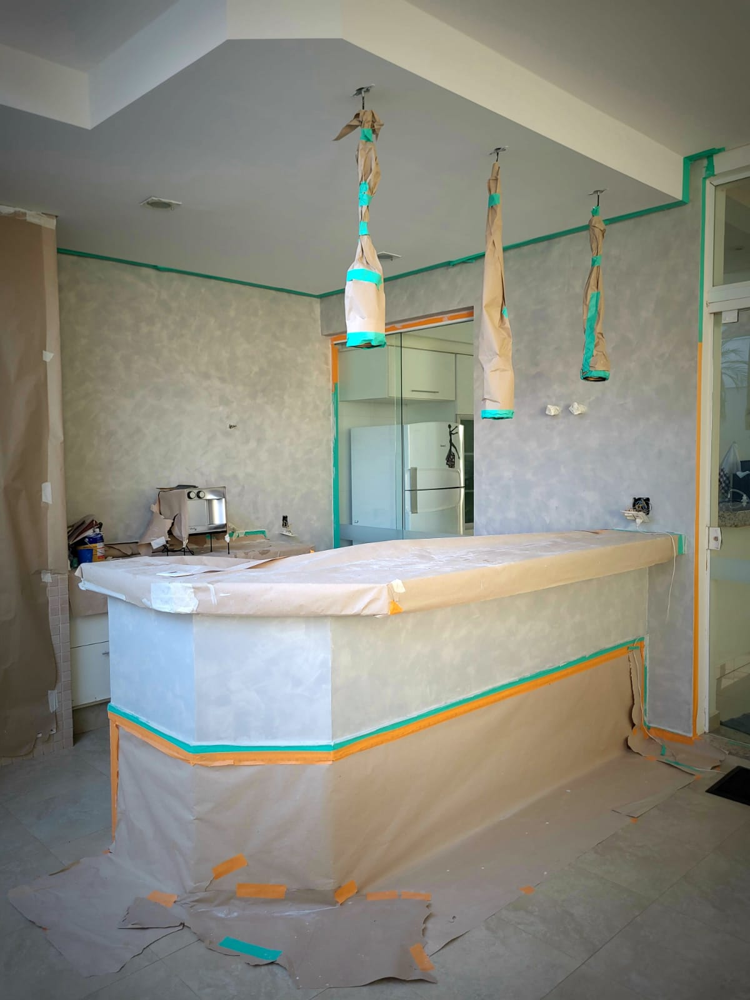
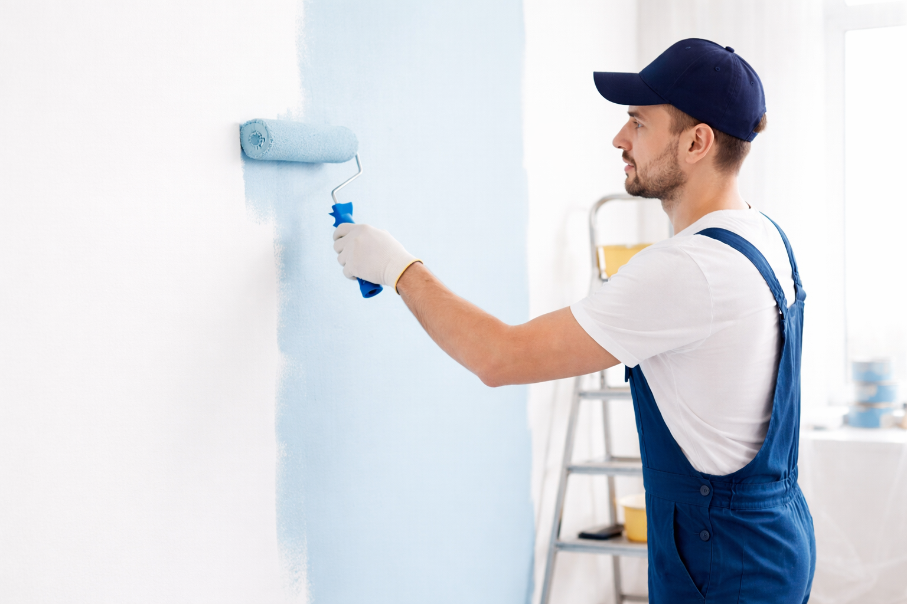

Pintura Residencial e Comercial com Acabamento Profissional
Transformamos seu ambiente com qualidade, organização e compromisso com prazos.
Solicitar OrçamentoNossos Serviços
Pintura Residencial
Ambientes internos e externos com acabamento impecável.
Pintura Comercial
Serviços rápidos e organizados para empresas.
Pintura Fachadas
Valorização e proteção da estrutura externa.
Texturas e Efeitos
Personalização moderna para o seu espaço
Serviços Concluídos
Pintura Residencial
Ambientes internos e externos com acabamento impecável.

Pintura Comercial
Serviços rápidos e organizados para empresas.
Pintura Fachadas
Valorização e proteção da estrutura externa.
Texturas e Efeitos
Personalização moderna para o seu espaço
Sobre a Arnaldo Pinturas
A Arnaldo Pinturas é especializada em serviços de pintura residencial e comercial, oferecendo soluções que unem qualidade, organização e acabamento profissional. Com experiência no setor, nossa equipe trabalha com atenção aos detalhes, utilizando materiais de qualidade e técnicas adequadas para garantir um resultado duradouro e esteticamente impecável. Cada projeto é realizado com planejamento, limpeza no processo e compromisso com prazos. Nosso objetivo é transformar ambientes, valorizando cada espaço com um acabamento bem feito e um atendimento transparente do início ao fim. Seja para renovar um ambiente, pintar uma fachada ou realizar um projeto completo de pintura, a **Arnaldo Pinturas** está pronta para entregar um serviço confiável e com alto padrão de qualidade.
